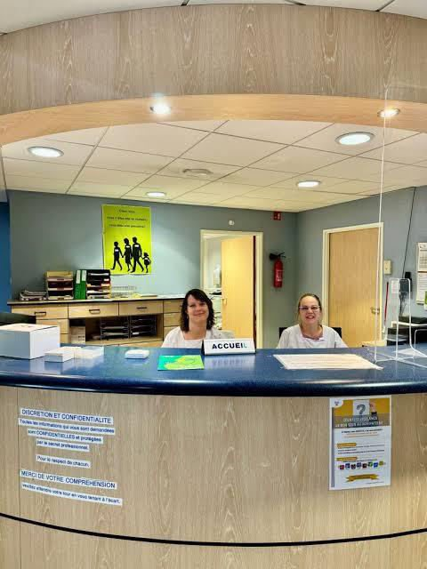

Le laboratoire médical
Version courte : l'essentiel, puis les questions. Lire le cours complet
Le laboratoire et ses missions
Un laboratoire de biologie médicale (LBM) réalise les examens de biologie médicale : confirmer un diagnostic, surveiller une pathologie, évaluer un traitement. Il ne soigne pas, il mesure.
Quatre missions :
- Diagnostic : confirmer ou infirmer une pathologie suspectée.
- Suivi thérapeutique : l'évolution de la maladie, l'efficacité du traitement.
- Prévention et dépistage : détecter tôt.
- Santé publique : vigilance sanitaire (épidémies, intoxications).
Ce n'est pas l'analyse qui fixe la mission, c'est la raison de la demande : le même glucose sert au dépistage, au diagnostic ou au suivi.
Les types de laboratoires
| Critère | Types |
|---|---|
| Statut juridique | privé (biologistes médicaux) ou hospitalier (rattaché à un établissement) |
| Organisation | mono-site ou réseau multisites (plateforme régionale et satellites) |
| Spécialités | Core Lab (biochimie, hématologie, microbiologie en gros volumes, automatisé) ou laboratoire spécialisé |


Le laboratoire hospitalier tourne souvent 24 h sur 24 (urgences, hospitalisés) ; le laboratoire extra-hospitalier reçoit une patientèle externe.
Les secteurs : une logique de flux
Le plan suit le trajet de l'échantillon : réception (station pneumatique, guichet) → aire pré-analytique (prélèvement, tri, centrifugation, aliquotage, conservation) → aire analytique (toutes les spécialités). Autour : locaux spécialisés (morgue, salle d'autopsie), rangements, aires clinico-administratives en retrait (sans traverser les paillasses), soutien au personnel (vestiaires, EPI).
Aliquotage : diviser un échantillon en portions égales, plus petites et représentatives (les aliquotes).
Le circuit de l'échantillon
Trois modes de transport : pédestre (tubes debout en portoir), pneumatique, tapis roulant ou guichet de tri automatisé.
Trois règles d'or :
- tubes en position verticale (pas de contact du sérum avec le bouchon, pas de microcaillots) ;
- délai court, souvent moins de 2 h ;
- intégrité de la chaîne : triple emballage ou sachet par patient, codes-barres.
Les trois phases
La phase pré-analytique est la plus critique : la majorité des erreurs y naît. Elle vise l'identitovigilance (zéro erreur de patient). Pour un patient : accueil et enregistrement → ordre de prélèvement (SIL, code-barres) → appel et double vérification d'identité (obligation légale) → prélèvement, étiquetage immédiat, homogénéisation → transfert.
Biosécurité
| Risque | Exemples | Prévention |
|---|---|---|
| Biologique | bactéries, virus, parasites | EPI, formation, vaccination |
| Chimique | corrosifs, toxiques, inflammables | signalisation, fiches de sécurité, ventilation, stockage |
| Physique | bruit, chaleur, froid, rayonnements | protections, signalisation |
Risques des équipements :
- Automates : pièces mobiles, aiguilles.
- Centrifugeuses : aérosols si un tube casse.
- Congélateurs : explosion (azote liquide), brûlures par le froid.
- Hottes et PSM : inefficaces si les filtres sont saturés.
L'évaluation des risques est systématique et documentée. L'EPI est une barrière finale : la sécurité se conçoit dans le système.
Questions d'examen
Réponds dans ta tête, puis touche « Voir la réponse ».
1. Donne les quatre missions d'un laboratoire de biologie médicale.
Voir la réponse
Diagnostic.
Suivi thérapeutique.
Prévention et dépistage.
Santé publique (vigilance sanitaire).
2. Qu'est-ce qu'un Core Lab ?
Voir la réponse
Un laboratoire regroupé, ou central : biochimie, hématologie et microbiologie en gros volumes, souvent automatisé.
3. Dans quel ordre l'échantillon traverse-t-il les secteurs du laboratoire ?
Voir la réponse
Unité de réception.
Aire pré-analytique.
Aire analytique.
4. Cite les sept étapes du circuit de l'échantillon.
Voir la réponse
Prescription, prélèvement, transport, réception et tri, préparation, analyse, validation et rendu.
5. Quelles sont les trois règles d'or du transfert des tubes ?
Voir la réponse
Tubes en position verticale.
Délai le plus court possible, souvent moins de 2 h.
Intégrité de la chaîne : triple emballage, traçabilité par code-barres.
6. Où commence et où finit la phase pré-analytique ? Pourquoi est-elle critique ?
Voir la réponse
De la prescription jusqu'à l'arrivée de l'échantillon à l'analyseur.
C'est là que surviennent la majorité des erreurs de laboratoire.
7. Un résultat juste est envoyé dans le dossier d'un autre patient. Quelle phase est en cause ?
Voir la réponse
La phase post-analytique : la mesure est bonne, c'est sa communication qui est fausse.
8. Quel niveau de biosécurité pour la plupart des laboratoires cliniques ? Et pour Mycobacterium tuberculosis ?
Voir la réponse
BSL-2 pour la plupart des laboratoires cliniques.
BSL-3 pour M. tuberculosis : maladie grave par inhalation.
9. Pourquoi la centrifugeuse est-elle rangée dans les risques liés aux équipements ?
Voir la réponse
Si un tube se brise, la rotation projette des aérosols : un risque biologique créé par l'appareil.
10. Que veut dire « l'EPI est une barrière finale » ?
Voir la réponse
La sécurité doit être conçue dans le système dès le départ.
L'équipement de protection individuelle n'est que la dernière protection, pas la seule.